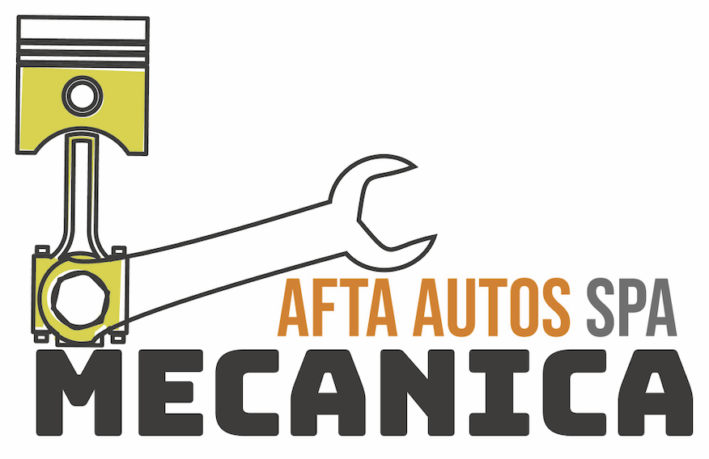

Experiencia en mecánica automotriz, calidad en cada pieza y servicio.
Nuestra empresa se especializa en ofrecer servicios de mantenimiento, reparación y fabricación de piezas, con amplia experiencia en mecánica automotriz. Trabajamos con las mejores marcas del mercado y contamos con personal altamente calificado.